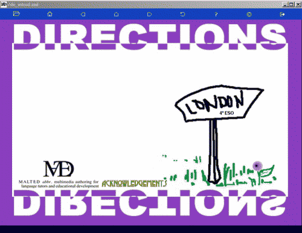

Barra de Herramientas del Navegador MALTED
|
|
La barra de
herramientas del Navegador MALTED por defecto está escamoteada dentro de
la pantalla, con el fin de que no añada 'ruido' a las interacciones que
los alumnos deban tener con los contenidos de las unidades. Para hacerla
visible, es necesario acercar el cursor del ratón a la parte superior de
la ventana del Navegador, como se muestra en la imagen. |
|

|
|
El diseño de las
unidades MALTED no cuenta con la necesidad de usar la barra de
herramientas del Navegador, pero ésta contiene utilidades que son
suplementarias a todas las unidades. |
| |
|
Este icono abre el cuadro de diálogo que permite
abrir un curso diferente, independientemente de dónde se encuentre
alojado. Lleva al cuadro de diálogo
Open course, |
|
|
|
Nos devuelve a la página de inicio del Navegador MALTED, lo que en la
versión posterior a junio de 2003 será
la interfaz de selección, y que en versiones anteriores era
el proyecto ejemplo (en el que se pueden conocer las interacciones
del programa). |
|
Este botón volverá al ejercicio anterior al que se está visualizando en
pantalla. Es el equivalente al botón
Atrás en los navegadores web. Junto con el botón de
siguiente ejercicio, sirve para
navegar en proyectos que no cuentan con los suficientes elementos de
navegabilidad como enlaces o botones propios. |
|
Este botón mostrará el primer ejercicio del curso activo o volverá al
curso abierto anteriormente . Puede ser una alternativa a pantallas en
las que no se han añadido suficientes elementos de navegabilidad, como
enlaces o botones de acceso a menús. |
|
Este botón avanzará un ejercicio sobre el que se esté visualizando.
Junto con el botón de ejercicio
anterior, sirve para navegar en proyectos que no cuentan con los
suficientes elementos de navegabilidad, como enlaces o botones propios. |
|
En caso de que se hubieran realizado algunas modificaciones o hubiera
surgido algún error durante la ejecución del ejercicio, este botón
vuelve a cargar la página visible. |
|
Da acceso al sistema de
ayuda del Navegador MALTED, documentación suplementaria sobre RTS. |
|
Desde este botón se muestran los
créditos del programa y
la
licencia de uso. |
|
Botón para salir, cerrando
el programa. |